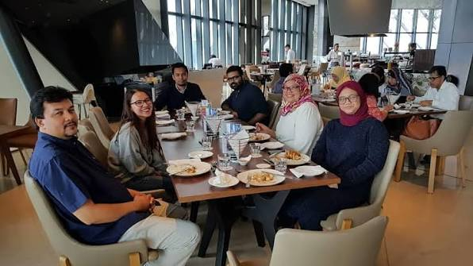
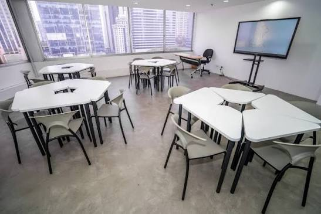
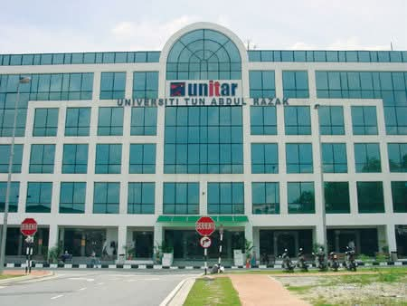
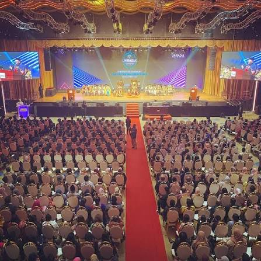
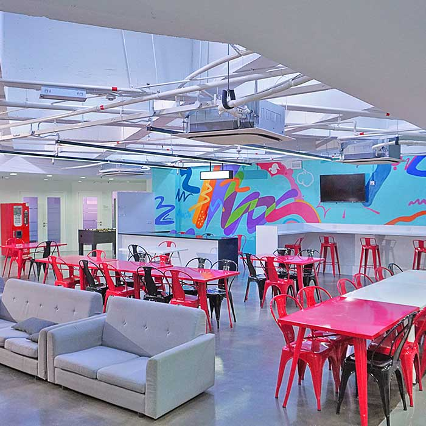

UNIRAZAK is one of Malaysia's premier private universities, named after the nation's second Prime Minister. It is famous for being a "Boutique University" that offers specialized, high-quality education in government, business, and education.
Home to the prestigious **Tun Abdul Razak School of Government (TARSOG)** and the **Bank Rakyat School of Business**, UNIRAZAK is the top choice for students aiming for careers in public policy, leadership, and corporate entrepreneurship.





UNIRAZAK is strategically located at Jalan Tangsi, right in the heart of Kuala Lumpur's heritage and administrative district. It is surrounded by landmarks like Bank Negara and Dataran Merdeka, providing an inspiring atmosphere for students.
195A, Jalan Tun Razak, 50400 Kuala Lumpur (and Jalan Tangsi)
Near LRT Bandaraya & KTM Bank Negara
Close to Govt Ministries & HQs
Near SOGO & Dataran Merdeka
Our goal is to make the admission process as smooth as possible for you. The requirements may vary slightly depending on the specific program, but general requirements include:
Simply click the "Chat Now" button or use our application portal. We will guide you step-by-step through document submission, visa processing, and accommodation booking.